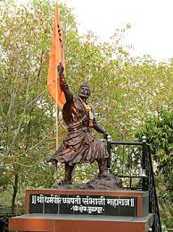
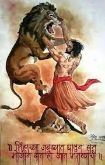

Over the course of his life, Shivaji engaged in both alliances and hostilities with the Mughal Empire, the Sultanate of Golkonda, Sultanate of Bijapur and the European colonial powers. Shivaji's military forces expanded the Maratha sphere of influence, capturing and building forts, and forming a Maratha navy.Shivaji established a competent and progressive civil rule with well-structured administrative organisations. He revived ancient Hindu political traditions, court conventions and promoted the usage of the Marathi and Sanskrit languages, replacing Persian in court and administration. Praised for his chivalrous treatment of women, Shivaji employed people of all castes and religions, including Muslims and Europeans, in his administration and armed forces.
Sambhaji Maharaj.
Early Life
Sambhaji was born at Purandar fort to the Maratha Emperor Shivaji, and his first wife Saibai, who died when he was two years old and he was raised by his paternal grandmother Jijabai. At the age of nine, Sambhaji was sent to live with Raja Jai Singh I of Amber as a political hostage to ensure compliance of the Treaty of Purandar that Shivaji had signed with the Mughals on 11 June 1665. As a result of the treaty, Sambhaji became a Mughal mansabdar. He and his father Shivaji attended the Mughal emperor Aurangzeb's court at Agra on 12 May 1666. Aurangzeb put both of them under house arrest but they escaped on 22 July 1666. However, the two sides reconciled and had cordial relations during the period 1666–1670. During the period between 1666 and 1668, Aurangzeb initially refused but later officially recognized the title of Raja that Shivaji assumed, on behalf of the Mughal Empire, after being pressed by Prince Mu'azzam. Aurangzeb looked upon the friendship of Prince Muazzam and Shivaji and Sambhaji with great suspicion. By mediation of Muazzam, Sambhaji was also restored to the Mughal mansabdar rank of 5,000 cavalry. Shivaji then sent Sambhaji with general Prataprao Gujar to take service under Prince Mu'azzam who was the Mughal viceroy at Aurangabad with Diler Khan as his deputy. Sambhaji visited prince Muazzam at Aurangabad on 4th November 1667 and was then granted rights to territory in Berar on the pretext of revenue collection After a short stay, Sambhaji returned to Rajgad while representative Maratha officers continued to stay in Aurangabad. In this period, the Marathas under Sambhaji fought alongside the Mughals under Muazzam against the Sultanate of Bijapur
Capture and Execution
In the 1687 Battle of Wai, the key Maratha commander Hambirao Mohite was killed and troops began to desert the Maratha armies. Sambhaji's positions were spied upon by his own relations, the Shirke family, who had defected to the Mughals. Ganoji Shirke (Brother in law of Sambhaji) informed his location to Muqarrab Khan a Mughal commander. Sambhaji and 25 of his advisors were captured by the Mughal forces of Muqarrab Khan in a skirmish at Sangameshwar in February 1689. Accounts of Sambhaji's confrontation with the Mughal ruler and following torture, execution and disposal of his body, vary widely depending on the source, though generally all agree that he was tortured and executed on the emperor's orders. The captured Sambhaji and Kavi Kalash were taken to Bahadurgad in present-day Ahmednagar district, where Aurangzeb humiliated them by parading them wearing clown's clothes and they were subjected to insults by Mughal soldiers.